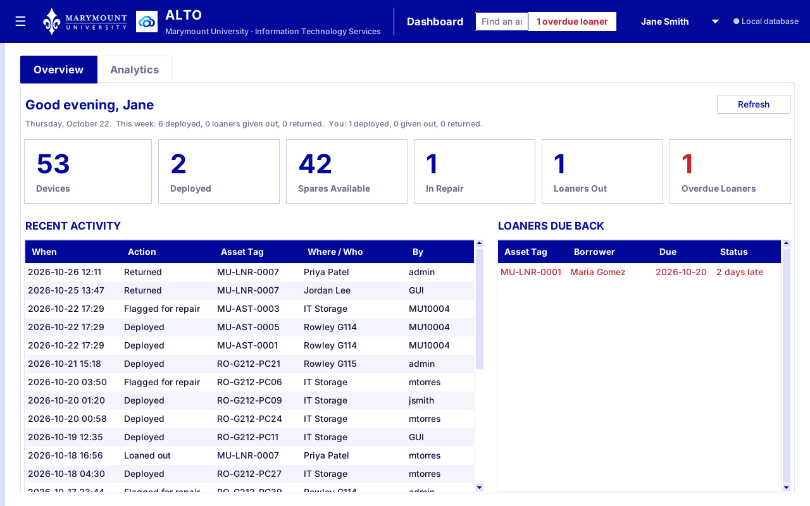
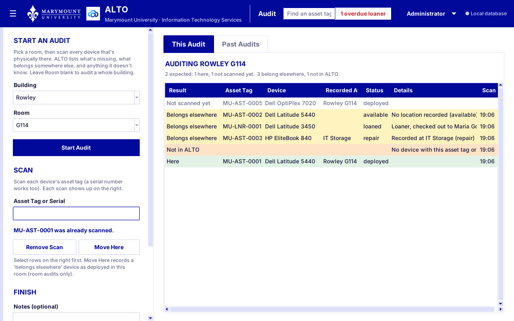

Projects
Things I’ve built
An internship app built for Marymount ITS, a team AI project, and the personal tools I build to solve my own problems.
ALTO: IT asset tracking for Marymount ITS
ALTO (Audit Lifecycle Tracking and Operations) is a Windows desktop app that tracks every device ITS hands out, moves, or retires, from purchase to disposal.


The problem
ITS tracked deployed computers, loaner laptops, and warranties in scattered spreadsheets, with no reliable record of where a device was or who last changed it.
What I built
- Python and Tkinter on SQLite, with a shared PostgreSQL test database
- 10 pages, each starting from a barcode scan of the asset tag
- Loaners with due dates and overdue alerts
- Room audits, warranty lookup, and Code128 labels for Zebra printers
- A full history of every device, with Excel export
Security by design
Admin and intern roles, salted password hashes, and every action logged with the user who made it.
Results
Demoed to the ITS team on October 23, 2026. The shared database is moving to AWS, and CSV import of existing devices is the next build.
AI loan application review system
Loan staff were reading applications, W-2s, Form 1003s, and bank statements by hand. As Scrum Master for the whole team and lead of the AI side, I built automated document workflows in n8n.
High confidence
Processed automatically into Google Sheets.
Low confidence
Sent to a human reviewer, so mistakes don’t slip through.
Team: AI and RPA development sides, each with a lead, plus requirements and cybersecurity requirements analysts, three project managers, and a tech lead. Result: the next semester’s capstone class picked the project up for phase two.
Personal projects
Tools I build for myself
Voice-triggered clip saver for OBS
A Python program that listens to my microphone with offline speech recognition (Vosk) and saves the OBS replay buffer over obs-websocket when I say a code phrase. After a week of real use, the first phrase caused false clips, so I tightened the detection to match only complete phrases and dropped a Discord-listening feature to keep it reliable.
Home server from old PC parts
I’m turning my old PC’s motherboard, CPU, and storage into a home server that will host a Python bot and store media.